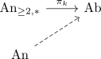
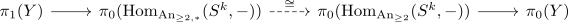

homotopy group functor from unpointed, simply connected anima
Proposition
Let $\mathrm{An}_{\geq 2}$ be the category of simply connected anima. Then there exists an extension

Proof
observe that $\pi_k$ is the constant functor for $k \leq 1$ so we may assume that $k \geq 2$. Now we have a natural transformation $\mathrm{Hom}_{\mathrm{An}_{\geq 2,*}}(S^k,-) \rightarrow \mathrm{Hom}_{\mathrm{An}_{\geq 2}}(S^k,-)$ coming from the forgetful functor $\mathrm{An}_{\geq 2,*} \rightarrow \mathrm{An}_{\geq 2}$.
We claim that this natural transformation induces an isomorphism after applying $\pi_0(-)$. This follows from the fiber sequence of mapping anima, pointed mapping anima and target

where $\pi_1(Y),\pi_0(Y) \cong *$ are trivial by assumption.
Hence $\pi_k(-): \mathrm{An}_{\geq 2,*} \rightarrow \mathrm{Set}$ is isomorphic to $\pi_0(\mathrm{Hom}_{\mathrm{An}_{\geq 2}}(S^k,-))$ after forgetting to unpointed anima.